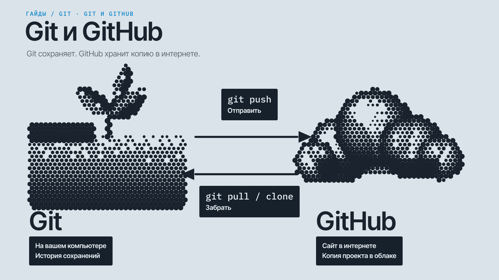
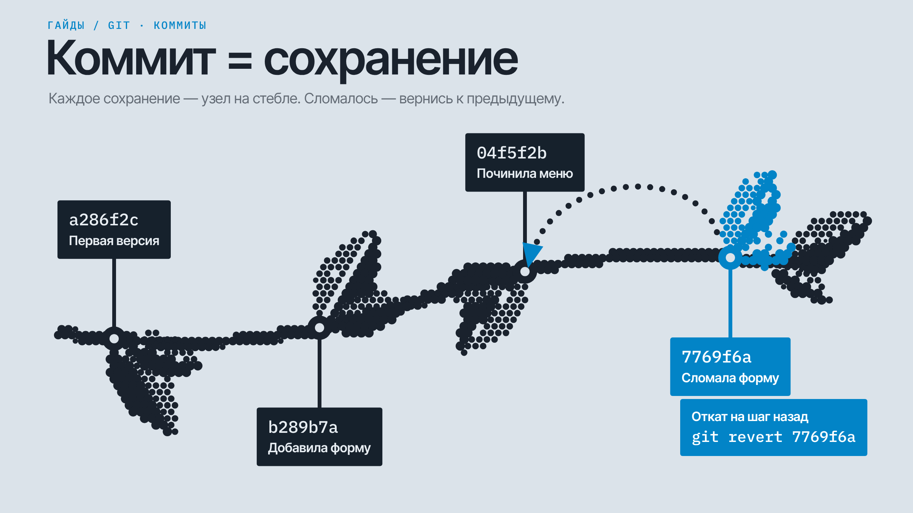
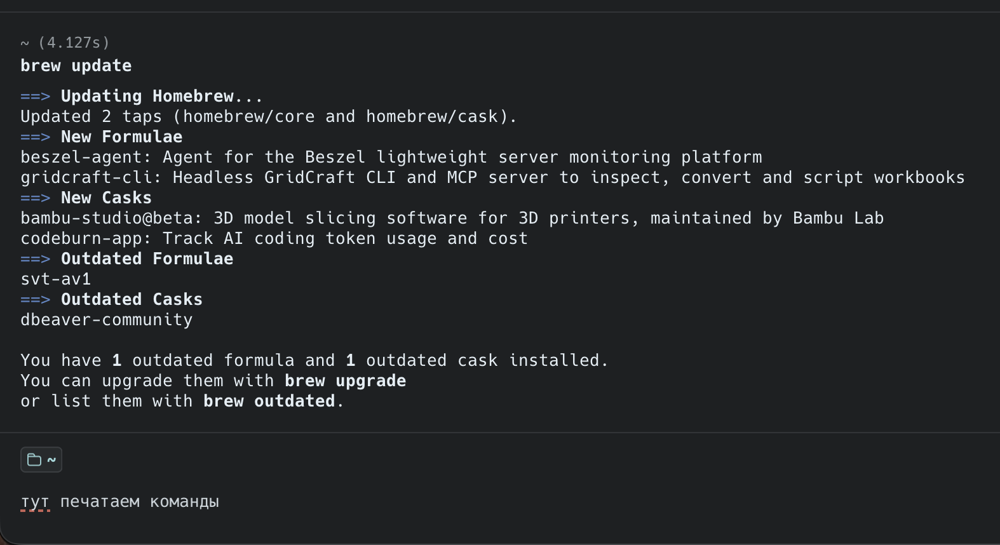
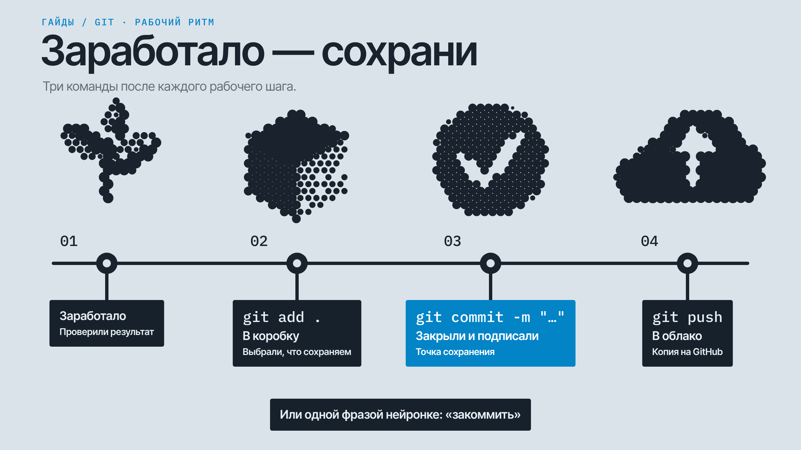
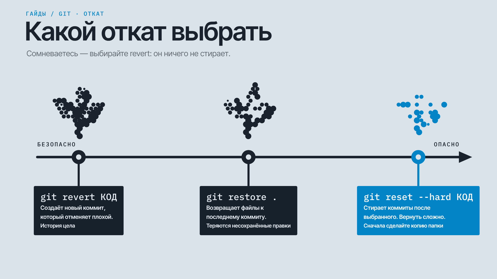
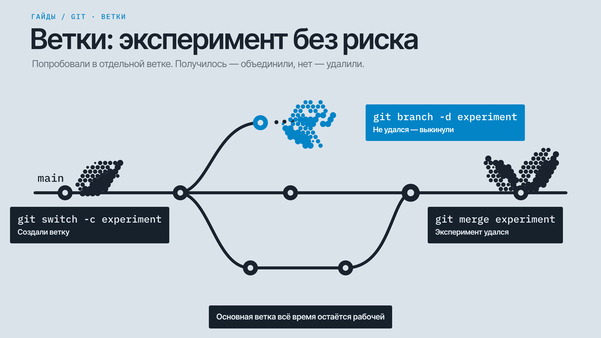

01 Что такое Git и зачем он нужен
Что вы получите после гайда:
- проект, который «запоминает» каждое удачное состояние;
- возможность вернуться к рабочей версии за минуту;
- копию проекта в интернете, которая переживёт поломку компьютера;
- понимание, как попросить обо всём этом нейронку одной фразой.
С чего начать: выберите свой путь
Сначала определите, как вы работаете с нейронкой.
| Ваша ситуация | Что читать |
|---|---|
| Нейронка работает прямо в папке проекта и сама запускает команды (Claude Code, Codex, Cursor и подобные) | «Быстрый путь» и «Готовые промты». Терминал почти не понадобится |
| Вы работаете в чате в браузере (ChatGPT, Claude.ai) и переносите файлы руками | «Терминал за пять минут» и «Ручной путь». Чат сам Git не запустит, он может только подсказывать команды |
| Хочется кнопок вместо команд | Раздел «Git с кнопками: программы-клиенты» (Fork, GitHub Desktop). Остальные разделы читайте как объяснение |
Что понадобится: компьютер, папка с вашим проектом и бесплатный аккаунт на GitHub (как его завести, разобрано в гайде про GitHub).
Git не меняет и не удаляет ваши файлы, пока вы сами не попросите об откате. Установка и первые сохранения безопасны, их можно спокойно пробовать.
Что значит «проект». Это папка с файлами вашего сайта, приложения, бота или даже заметок. Git лучше всего работает с текстовыми файлами (код, тексты, Markdown). Картинки и видео он тоже хранит, но тяжёлые файлы раздувают историю.
Что такое Git простыми словами
Git — программа на вашем компьютере. Она следит за папкой с проектом и по вашей команде делает коммиты: запоминает, как выглядели все файлы в этот момент. Коммитов можно сделать сколько угодно и вернуться к любому из них.
Аналогия с компьютерной игрой:
| В игре | В Git |
|---|---|
| Сохранение | Коммит (commit) |
| Подпись к сохранению («перед боссом») | Сообщение коммита («добавила форму заказа») |
| Список сохранений | История коммитов (git log) |
| Загрузить сохранение | Откат |
| Попробовать другой путь, не теряя основной | Ветка (branch) |
Git не копирует весь проект заново каждый раз, он запоминает только изменения, поэтому история занимает мало места.
Git и GitHub: в чём разница
Их постоянно путают:
- Git — программа. Работает у вас на компьютере, без интернета и аккаунтов.
- GitHub — сайт, где хранятся копии ваших проектов «в облаке». Аналог Google Drive, только для проектов с историей Git.
Можно пользоваться одним Git без GitHub. Но GitHub даёт плюсы: проект не пропадёт, если что-то случится с компьютером; многие сервисы (например, Cloudflare для публикации сайта) умеют забирать код прямо оттуда (как это настроить); удобно работать с проектом с разных устройств или вайбкодить сразу в облаке.
Есть и другие сайты для этого (GitLab, Bitbucket), принцип тот же.

Небольшой словарик
| Слово | Что значит |
|---|---|
| Репозиторий (репо) | Папка проекта вместе с историей его сохранений. Создаётся один раз |
| Коммит | Одно сохранение с подписью |
| Ветка (branch) | Отдельная линия сохранений. Основная обычно называется main |
| Push («запушить») | Отправить сохранения с компьютера на GitHub |
| Pull («пулл») | Забрать с GitHub то, чего нет у вас на компьютере |
| Clone | Скачать проект с GitHub к себе целиком |
| Откат | Вернуться к одному из прошлых сохранений |
.gitignore | Файл со списком того, что Git не должен сохранять (пароли, лишний мусор) |
git add («добавить») | Выбрать, какие изменения войдут в следующее сохранение. Как положить вещи в коробку, прежде чем заклеить её (коммит) и подписать |
main | Название основной ветки. Раньше часто было master, смысл тот же |
origin | Имя, которое Git даёт адресу вашего репозитория на GitHub. Встретится в командах git push и git remote |
.env | Файл, в котором программа хранит пароли и ключи. В Git его класть нельзя |
| API-ключ, токен | Длинный «пароль для программ»: по нему сервис понимает, что запрос пришёл от вас. Если его увидит чужой, он сможет тратить ваши деньги и лимиты |
Зависимости (node_modules) | Чужие библиотеки, которые скачиваются автоматически. Весят много, хранить их в Git не нужно |
| Конфликт | Ситуация, когда две версии одного файла изменены по-разному и Git не знает, какую оставить |
| Терминал и CLI | Окно для команд и программы, которыми там управляют (см. раздел «Терминал за пять минут») |

02 Быстрый путь: Git через нейронку
Если вы работаете с нейронкой, которая умеет выполнять команды (Claude Code, Codex, Cursor, Gemini CLI и подобные), Git можно почти не изучать. Нейронка умеет делать коммиты сама. Вам нужно один раз настроить и дальше говорить несколько фраз.
-
Настройте один раз. Дайте нейронке такой промт в папке проекта:
Промпт для нейронки — настроить Git в проектеПункт 4 важен: посмотрите список и убедитесь, что в нём нет паролей и ключей (файлов
Настрой для этого проекта Git: 1. Проверь, установлен ли Git. Если нет, подскажи, как поставить. 2. Создай репозиторий в этой папке. 3. Добавь файл .gitignore: туда должны попасть файлы с паролями и ключами (.env), папки с зависимостями (node_modules) и системный мусор (.DS_Store). 4. Покажи мне список файлов, которые попадут в первый коммит, и подожди моего ответа. 5. После моего ответа сделай первый коммит с понятным названием.
.env, любых с пометкой secret, key, token).Что вы увидите. Нейронка будет показывать окно «разрешить выполнить команду?». Прочитайте команду. Обычные
git status,git add,git commit,git logможно разрешать смело. На всё, где есть слова--force,reset --hard,clean,delete, остановитесь и спросите нейронку, что случится. Кнопку «всегда разрешать» для таких команд не нажимайте.Если нейронка пишет, что Git установлен и первый коммит сделан, проверьте: попросите «покажи последние 5 коммитов». Должна появиться хотя бы одна строка с подписью «Первая версия».
-
Подключите GitHub (нужно один раз). Заведите аккаунт на github.com (пошаговый гайд) и скажите нейронке:
Промпт для нейронки — отправить проект на GitHubНейронке понадобится вход в GitHub. Самый простой способ: она предложит установить программу GitHub CLI (
Создай приватный репозиторий на GitHub для этого проекта и отправь в него код. Если нужно, подскажи, как войти в мой аккаунт.
gh) и выполнитgh auth login, откроется браузер, вы нажмёте «Авторизовать». Что такоеghи как войти самой, читайте в разделе про GitHub CLI. -
Дальше живёте в таком ритме. Всё заработало, значит сохраните:
Промпт для нейронки — сохранитьКороче: «закоммить». Это и есть точка сохранения.
Сделай коммит с понятным названием и отправь на GitHub
-
Можно экспериментировать. Если нейронка всё испортила, не чините это ещё десятью сообщениями:
Промпт для нейронки — откатитьсяили:
Верни проект к последнему коммиту
Промпт для нейронки — откатиться на коммит назадОткатись до предыдущего коммита
Что ещё удобно просить у нейронки
| Что нужно | Фраза |
|---|---|
| Понять, что изменилось | «Покажи простыми словами, что изменилось с прошлого коммита» |
| Посмотреть историю | «Покажи последние 10 коммитов списком» |
| Попробовать рискованную идею | «Создай новую ветку experiment и работай в ней, основную не трогай» |
| Вернуться в основную | «Переключись обратно на main» |
| Забрать удачный эксперимент | «Объедини ветку experiment с main» |
| Найти, когда сломалось | «Найди коммит, после которого перестала работать форма, и объясни, что в нём изменилось» |
Правила безопасности при работе через нейронку
- Перед рискованной просьбой коммитьте. Откатиться можно только к тому, что было сохранено. Несохранённые правки Git вернуть не может.
- Просите нейронку показывать команды перед откатом. У отката есть «жёсткие» варианты, которые стирают несохранённую работу (подробнее в разделе про откат). Скажите: «Перед отменой изменений покажи, что будет потеряно».
- Не разрешайте принудительную отправку (
git push --force), пока не понимаете последствий. Эта команда перезаписывает историю на GitHub. - Проверяйте коммиты. После первого коммита откройте репозиторий на GitHub и убедитесь, что там нет файла
.envи ключей. - Комментарий к коммиту пусть пишет нейронка, но он должен быть понятен вам через месяц: что сделано, а не «изменения» или «правки».
03 Готовые промты для нейронки
Копируйте блоки целиком и подставляйте своё в квадратных скобках. Промты работают в нейронках, которые умеют запускать команды (Claude Code, Codex, Cursor, Gemini CLI). В чате без доступа к папке нейронка может только подсказать команды, выполнять их придётся вам.
Постоянные правила (вставьте один раз)
Положите этот текст в файл инструкций проекта (CLAUDE.md для Claude Code, AGENTS.md для Codex и других), и нейронка будет следовать ему в каждой сессии:
Правила работы с Git в этом проекте: - Перед большой или рискованной задачей предложи сделать коммит текущего состояния. - Коммить только после моего разрешения или фразы «закоммить». Сообщения коммитов пиши по-русски, коротко, о том, что сделано (например, «Добавила форму заявки»). - Перед каждым коммитом показывай список файлов и проверяй, что в нём нет паролей, ключей, токенов и файлов .env. - Никогда не используй git push --force, git reset --hard и git clean без моего явного подтверждения. Сначала объясни простыми словами, что будет потеряно. - Эксперименты делай в отдельной ветке, основную ветку main не ломай. - Если что-то пошло не так, не чини это цепочкой правок: сначала предложи откат и покажи, к какому коммиту.
Начало работы
Настрой Git в этой папке. Проверь, установлен ли Git; если нет, объясни, как поставить. Создай репозиторий с основной веткой main. Добавь .gitignore под мой тип проекта: туда должны попасть файлы с паролями и ключами (.env), зависимости (node_modules), сборка и системный мусор. Покажи мне список файлов для первого коммита и жди моего ответа. Потом сделай первый коммит «Первая версия проекта».
Создай приватный репозиторий на GitHub с именем [имя-проекта] и отправь туда код. Если нужна авторизация, предложи самый простой способ (GitHub CLI) и пошагово скажи, что мне нажимать. Принудительную отправку не используй.
Проверь репозиторий на секреты: найди в файлах и во всей истории коммитов пароли, API-ключи, токены и файлы .env. Покажи, что нашла и где, ничего не удаляй. Если секрет найден, скажи, какой ключ мне нужно перевыпустить.
Ежедневная работа
Сделай коммит. Сначала покажи, какие файлы изменены и нет ли среди них секретов. Название коммита придумай сама, чтобы через месяц было понятно, что сделано. После коммита отправь на GitHub.
Перед тем как начнёшь, зафиксируй текущее состояние коммитом «Перед [название задачи]». Потом выполняй задачу. Если результат окажется плохим, мы вернёмся к этому коммиту.
Покажи простыми словами, что изменилось в проекте с последнего коммита. Не перечисляй строки кода: скажи, что стало по-другому для пользователя и какие файлы затронуты.
Покажи последние 15 коммитов списком: код, дата, название. Отметь, какой из них, по-твоему, последний полностью рабочий, и объясни почему.
Подведи итог сессии: что мы сделали, что сохранено в коммитах, что осталось несохранённым. Если есть несохранённое рабочее, предложи сделать коммит.
Откат, когда всё сломалось
Стоп, ничего не меняй. Покажи статус Git: что изменено и не сохранено, какие последние коммиты. Объясни простыми словами, что именно сломалось, и предложи 2 варианта возврата от самого безопасного. Для каждого скажи, что будет потеряно.
Верни проект к последнему коммиту: отмени все несохранённые правки. Сначала покажи список файлов, которые изменятся, и скажи, что будет потеряно. Выполняй только после моего «да».
Отмени коммит [код или название] через git revert: так история сохранится. Покажи, что изменится, и после этого проверь, что проект запускается.
Хочу вернуться к состоянию коммита [код]. Не стирай историю: создай ветку «backup-сегодняшняя-дата» с текущим состоянием, и только потом верни основную ветку к тому коммиту. Перед выполнением объясни, что произойдёт, и жди подтверждения.
Форма [или другая функция] раньше работала, а теперь нет. Найди среди последних коммитов тот, после которого она сломалась, и объясни, что в нём изменилось. Ничего не откатывай, только покажи.
Верни файл [путь/к/файлу] в том виде, в каком он был в коммите [код]. Остальные файлы не трогай.
Ветки и эксперименты
Создай ветку experiment-[название] и работай только в ней. Основную ветку main не трогай. Когда закончим, я скажу, оставляем результат или выкидываем.
Эксперимент удался: объедини ветку experiment-[название] с main. Перед этим покажи, что войдёт. Если возникнут конфликты, объясни простыми словами, в чём они, и предложи решение, но не выбирай сама, какую версию оставить.
Эксперимент не удался: вернись на main и удали ветку experiment-[название]. Сначала скажи, есть ли в ней работа, которой нет нигде больше.
Новый компьютер и чужой проект
Скачай мой репозиторий [ссылка на GitHub] в папку [путь], установи зависимости и объясни, как запустить проект.
Забери последние изменения с GitHub и скажи, что нового появилось. Если есть конфликты с моими правками, ничего не затирай: объясни, в чём они.
Когда что-то странное
Вот что показал Git: [вставьте текст ошибки] Объясни простыми словами, что это значит и что из-за этого может случиться. Предложи самый безопасный способ исправить и скажи, какую команду ты хочешь выполнить, прежде чем её запускать.
Я случайно отправила в репозиторий [ключ/пароль/файл .env]. Не выполняй ничего, пока не объяснишь план. Скажи: 1) что мне сделать с самим ключом в первую очередь, 2) как убрать файл из репозитория и добавить его в .gitignore, 3) как понять, что ключ никто не использовал, 4) нужно ли чистить историю и чем это рискованно.
Как работать с этими промтами
- Начинайте с «покажи, потом делай» для всего, что стирает или перезаписывает. Хорошие слова-страховки: «сначала покажи», «жди подтверждения», «скажи, что будет потеряно».
- Если нейронка предлагает
reset --hard,cleanилиpush --force, остановитесь и спросите: «Что именно я потеряю и есть ли способ безопаснее?» - Для повседневной работы хватит трёх промтов: сохранить рабочую версию, сохранить точку перед рискованной задачей, разобраться до отката.
04 Git с кнопками: программы-клиенты
Что это и зачем
Git-клиент — обычная программа с окном, которая делает всё то же, что команды git, но кнопками. Вы видите список изменённых файлов, нажимаете «Commit», и вместо git log перед вами схема всех сохранений и веток. Под капотом это тот же Git, поэтому клиент, терминал и нейронка спокойно работают с одной папкой одновременно: сделали коммит в нейронке, он сразу появился в клиенте.
Чем клиент полезен при работе с нейронкой:
- Видно, что она изменила. Список файлов и подсветка добавленных и удалённых строк перед коммитом. Это быстрая проверка: «а что она там натворила?».
- История с картинкой. Схема коммитов и веток понятнее, чем вывод
git logв терминале. - Откат по клику. Правой кнопкой по коммиту можно откатить его или создать ветку от него. Это те же
revertиswitch -cиз раздела про откаты. - Страховка от опечаток. Не нужно помнить, как пишется команда.
Какой выбрать
| Программа | Для кого | Платформы | Цена |
|---|---|---|---|
| GitHub Desktop | Самый простой старт, живёт в связке с GitHub | Mac, Windows | Бесплатно |
| Fork | Быстрый, аккуратный, удобная история и конфликты | Mac, Windows | Платный, разовая лицензия, есть пробный период (актуальные условия на git-fork.com) |
| Sourcetree, GitKraken | Тоже популярны, больше возможностей | Mac, Windows | Условия разные, смотрите на сайтах программ |
| Встроенное в Cursor / VS Code | Не ставить ничего нового: вкладка Source Control (значок с ответвлением) | Там, где стоит редактор | Бесплатно |
Для новичка разумный выбор: GitHub Desktop, если хочется бесплатно и просто, или Fork, если важны удобная история и разбор конфликтов. Если вы уже сидите в Cursor или VS Code, начните со встроенной вкладки Source Control: в ней есть список изменений, поле для подписи коммита и кнопки Commit и Sync.
Как начать (на примере Fork)
- Скачайте программу с официального сайта git-fork.com и установите как обычное приложение. Git на компьютере должен быть установлен (см. «Ручной путь»).
- Откройте программу и добавьте папку проекта: меню File → Open Repository (в GitHub Desktop: File → Add Local Repository). Если папка ещё не под Git, программа предложит создать репозиторий.
- Слева выберите «Local Changes». Появится список изменённых файлов. Кликните файл, чтобы увидеть, что именно поменялось.
- Отметьте нужные файлы кнопкой Stage (это тот же
git add), напишите подпись и нажмите Commit. - Кнопка Push отправляет сохранения на GitHub, Pull забирает чужие. Для входа в GitHub клиент сам покажет окно авторизации в браузере.
Остальное знакомо из гайда: ветки создаются правой кнопкой по коммиту, а откат делается через пункт «Revert commit».
Клиент вместе с нейронкой
- Рабочий порядок: нейронка внесла правки, вы открыли клиент, посмотрели список изменений, закоммитили сами или попросили нейронку.
- Откройте клиент перед рискованной просьбой, чтобы видеть историю. Если что-то пошло не так, откат делается парой кликов.
- Не держите несколько программ, которые одновременно «синхронизируют» папку. Выберите, кто делает push, чтобы не получить путаницу.
- Конфликты (когда одну и ту же строку поменяли в двух местах) клиенты показывают наглядно: два варианта рядом. Но и для них можно попросить нейронку: «разреши конфликт и объясни, что оставила».
05 Терминал за пять минут
Терминал — окно, в которое печатают команды. Нейронка в вашей папке сама запускает команды Git, поэтому вам нужно уметь только три вещи: открыть терминал, понять, в какой вы папке, и прочитать ответ.
Как открыть
- В редакторе (проще всего). В Cursor и VS Code: меню Terminal → New Terminal. Терминал сразу откроется в папке проекта.
- Mac.
Cmd + Пробел, напишите «Терминал», Enter. - Windows. Установите Git с git-scm.com/downloads (настройки по умолчанию подходят) и откройте программу Git Bash из меню «Пуск».

Что такое CLI
CLI (command-line interface) — программа, которой управляют командами, а не кнопками: git, gh, claude, codex, npm. Команду можно скопировать из гайда, записать в инструкцию или поручить нейронке. Поэтому нейронкам с CLI работать проще, чем нажимать кнопки в окне. Программа с окнами и кнопками называется GUI: GitHub Desktop и Fork как раз GUI для Git.
Минимум команд
| Команда | Что делает |
|---|---|
pwd | Показывает, в какой папке вы сейчас |
ls | Показывает файлы в этой папке |
cd и перетащить папку в окно | Заходит в папку проекта: напишите cd с пробелом и перетащите папку из Finder или Проводника в терминал |
Команды Git запускают в папке проекта. Если терминал пишет fatal: not a git repository, вы не в той папке: проверьте pwd.
Ещё три полезные вещи: стрелка вверх подставляет прошлую команду, Ctrl + C останавливает зависшую команду, а command not found значит, что программа не установлена или нужно перезапустить терминал. Не запускайте команды, смысла которых не понимаете (особенно с rm, sudo, curl ... | sh): сначала спросите нейронку, что они делают.
06 Ручной путь: Git командами, коротко
Нужен, чтобы понимать, что происходит под капотом, или когда нейронка работает в браузере и сама команды не запускает. Весь путь помещается в один блок. Выполняйте команды в папке проекта:
git --version
git config --global user.name "Ваше Имя"
git config --global user.email "ваша@почта.com"
git init -b main
git add .
git status
git commit -m "Первая версия"
git log --oneline| Команда | Что происходит |
|---|---|
git --version | Проверка, что Git установлен. Если нет: на Mac система предложит поставить сама, на Windows нужен установщик с git-scm.com |
git config --global ... | Один раз на компьютере: Git подписывает сохранения вашим именем и почтой. Без этого первый коммит не получится (ошибка Author identity unknown) |
git init -b main | Включает Git в папке: создаётся скрытая .git с историей, ваши файлы не меняются |
git add . | Отмечает все файлы для сохранения |
git status | Показывает, что попадёт в сохранение. Проверьте список перед коммитом |
git commit -m "..." | Сохраняет снимок проекта с подписью |
git log --oneline | Показывает историю: код сохранения и подпись |
Перед первым git add . создайте файл .gitignore (с точкой в начале, без расширения) со списком того, что нельзя сохранять:
.env
node_modules/
.DS_Store.env хранит пароли и ключи и не должен попасть в Git. node_modules/ — тяжёлая папка с чужими библиотеками, .DS_Store — служебный файл macOS. Список под ваш проект подскажет нейронка.
Отправка на GitHub
Чтобы код оказался в облаке, нужны аккаунт, пустой репозиторий, команды git remote add origin ... и git push -u origin main, а ещё вход в GitHub (пароль от аккаунта Git не принимает). Всё это пошагово разобрано в гайде про GitHub. Самый простой вход даёт gh auth login (раздел ниже) или клиент с кнопками (раздел выше).
Рабочий ритм
Каждый раз, когда что-то заработало:
git add .
git commit -m "Добавила форму заявки"
git push
Подписи пишите коротко и о том, что сделано («Добавила форму заявки», «Исправила кнопку на мобильном»), не «правки» и не «ещё»: через месяц подпись будет единственной подсказкой, к какому сохранению откатываться. Один коммит на одну законченную мысль.
07 GitHub CLI (gh): вход в GitHub из терминала
gh — официальная программа GitHub для терминала. git сохраняет проект на вашем компьютере, а gh разговаривает с сайтом GitHub. С ней один раз входят в аккаунт через браузер, и дальше git push работает без паролей. Нейронки тоже любят gh: «создай репозиторий и отправь код» они обычно выполняют именно им.
Установка. Mac: brew install gh (нужен Homebrew, brew.sh). Windows: winget install --id GitHub.cli. Другие системы: cli.github.com. Проверка: gh --version (если command not found, перезапустите терминал).
Вход. Выполните gh auth login и выберите по очереди: GitHub.com → HTTPS → «Authenticate Git with your GitHub credentials» Y → Login with a web browser. Скопируйте показанный код, нажмите Enter, вставьте код на открывшейся странице GitHub и нажмите Authorize. Формулировки вопросов могут отличаться, логика та же. Проверка: gh auth status.
| Что нужно | Команда |
|---|---|
| Создать приватный репозиторий из текущей папки и отправить код (в папке уже должен быть коммит) | gh repo create имя-проекта --private --source=. --push |
| Открыть страницу репозитория в браузере | gh repo view --web |
| Скачать проект | gh repo clone ваш-ник/имя-проекта |
Вход через gh даёт программам на компьютере, в том числе нейронке с доступом к терминалу, права на ваш аккаунт: она технически может создать или удалить репозитории. Поэтому в правилах для нейронки команды вроде gh repo delete разрешайте только с вашего «да». На чужом компьютере после работы выполните gh auth logout. Если git push всё равно просит пароль, выполните gh auth setup-git.
08 Как вернуться назад
Выбор способа зависит от ситуации. Сначала всегда посмотрите, что происходит:
git status
git log --onelineСитуация 1. Нейронка что-то правила, результат плохой, ничего не сохранено
Вернуть все файлы к последнему коммиту:
git restore .Все несохранённые правки в файлах пропадут безвозвратно. Новые файлы, которые нейронка создала, останутся: их Git ещё не знает. Если хотите посмотреть, что вернётся, сначала выполните git diff (покажет изменения).
Ситуация 2. Плохая правка уже закоммичена
Самый безопасный способ: создать новый коммит, который отменяет старый. История при этом сохраняется целиком.
git log --oneline
git revert a286f2cВместо a286f2c подставьте код нужного коммита из списка. Git сам создаст новое сохранение «Revert ...».
Ситуация 3. Хочу вернуться на несколько шагов назад и забыть всё, что было после
Это «жёсткий» откат. Он стирает коммиты, которые были после выбранного:
git reset --hard a286f2cИспользуйте, только если уверены. Вернуть удалённое сложно. Если проект уже отправлен на GitHub, расхождение придётся исправлять принудительной отправкой (git push --force), и это опасно: не делайте этого, не разобравшись, или попросите нейронку объяснить последствия.
Ситуация 4. Просто хочу посмотреть старую версию
Создайте отдельную ветку из старого коммита и посмотрите, не трогая основную:
git switch -c old-version a286f2cВернуться в основную: git switch main.
Что запомнить
- Откатиться можно только к тому, что было сохранено коммитом. Поэтому «заработало, значит сохрани».
- Если сомневаетесь, выбирайте
git revert: он ничего не стирает. - Перед любым жёстким откатом делайте копию папки проекта.

09 Ветки: безопасные эксперименты
Ветка — это параллельная линия сохранений. Вы отходите от основной, пробуете рискованную идею, и основной проект остаётся нетронутым. Получилось — присоединяете ветку к основной. Не получилось — удаляете, как будто ничего не было.
git switch -c experiment # создать ветку и перейти в неё
# ... работа, коммиты ...
git switch main # вернуться в основную
git merge experiment # присоединить удачный эксперимент
git branch -d experiment # удалить ветку, если больше не нужна
Это тот же приём, что форк чата с нейронкой: копия с любого момента, чтобы пробовать без риска. Перед созданием ветки закоммитьте то, что уже работает.
Что делать с конфликтом
Конфликт возникает, когда вы присоединяете ветку, а один и тот же кусок файла изменён в обеих по-разному. Git не гадает, а останавливается и помечает такие места в файле строками <<<<<<<, ======= и >>>>>>>: между ними две версии.
Не пугайтесь, ничего не потеряно. Что делать:
- Выполните
git status: Git покажет файлы с конфликтом. -
Попросите нейронку:
Промпт для нейронки — разобрать конфликт слияния
У меня конфликт слияния. Объясни простыми словами, чем различаются две версии в каждом файле, и предложи, какую оставить. Не выбирай сама.
- Выберите версию (или объедините) и скажите нейронке завершить слияние.
- Если запутались, отмените слияние:
git merge --abort. Всё вернётся как до слияния.
10 Безопасность: что нельзя класть в Git
- Пароли, ключи, токены. Они не должны попадать в репозиторий, особенно публичный. Храните их в файле
.env, который прописан в.gitignore, или в секретах сервиса, где вы публикуете проект. - Выбирайте Private. Если не нужно показывать проект миру, создавайте приватный репозиторий. Позже его можно сделать публичным.
- Если ключ всё же попал в репозиторий, удалить файл недостаточно: он остаётся в истории. Нужно сразу перевыпустить ключ в сервисе, считая старый скомпрометированным. Готовый промт есть выше.
- Большие файлы. GitHub не принимает файлы больше 100 МБ. Видео и тяжёлые исходники лучше хранить отдельно.
- Чужие данные. Не кладите в репозиторий базы клиентов, документы и личные данные.
Git и публикация сайта
Если сайт публикуется через Cloudflare Pages и GitHub, каждый git push в основную ветку обновляет сайт. Значит, коммитьте и пушьте только работающую версию. А если на сайте что-то сломалось, есть два уровня отката: вернуть коммит в Git (этот гайд) или выбрать предыдущий успешный деплой в Cloudflare (раздел про rollback).
11 Чек-лист
- Git установлен (
git --versionпоказывает версию). - Представилась (имя и почта настроены).
- В проекте есть
.gitignore, в нём.envиnode_modules. - Первый коммит сделан, пароли и ключи в него не попали.
- Репозиторий на GitHub приватный, код отправлен.
- Привычка: заработало → коммит → push.
- Перед рискованной просьбой нейронке — коммит.
- Знаю три фразы: «закоммить», «верни к последнему коммиту», «покажи, что изменилось».
12 Частые вопросы
- Нужно ли знать программирование?
- Нет. Достаточно уметь сказать нейронке «закоммить» и «откатись» или набрать три команды из рабочего ритма.
- Нужен ли GitHub, если проект только у меня?
- Не обязательно, Git работает и без него. Но на GitHub проект переживёт поломку компьютера, а для публикации сайта он почти всегда нужен.
- Это платно?
- Git бесплатный. Для личных проектов, в том числе приватных, бесплатного тарифа GitHub хватает; актуальные условия смотрите в документации GitHub.
- Чем Git отличается от отката в самой нейронке?
- Откат в нейронке (например,
/rewindв Claude Code, он разобран в гайде про фишки Claude Code) помнит только то, что делала она сама в этой сессии, и не возвращает правки, сделанные командами или вами вне программы. Git хранит всё в самом проекте, независимо от нейронки, и работает с любой. - Я забыла закоммитить, а всё сломалось. Что делать?
- Git не умеет вернуть несохранённое. Проверьте корзину, историю версий редактора (в VS Code и Cursor есть Local History / Timeline), облачное хранилище, если папка там лежит. Дальше помогает только привычка коммитить часто.
- Сколько коммитов делать?
- Столько, чтобы можно было вернуться к удобной точке. Один коммит на одну законченную мысль или рабочий шаг, и обязательно перед рискованной просьбой нейронке. Лучше слишком много, чем слишком мало.
- Можно ли вести в Git заметки, например Obsidian?
- Да, это обычные текстовые файлы. Историю версий получите бесплатно. Секретные заметки в публичный репозиторий не кладите.
- Что значит
mainиmaster? - Это название основной ветки. Старые проекты используют
master, новыеmain. Смысл одинаковый. - Git и резервная копия — это одно и то же?
- Не совсем. GitHub защищает от поломки компьютера, но только то, что вы отправили (
push). Несохранённое и не отправленное не защищено. - Что такое «detached HEAD» и почему Git пугает этим?
- Так Git называет состояние, когда вы смотрите на старый коммит, не находясь ни в какой ветке. Если нужно сохранять работу оттуда, создайте ветку:
git switch -c название. - Можно вообще без терминала и без команд?
- Да, поставьте клиент (GitHub Desktop или Fork, раздел «Git с кнопками») или используйте вкладку Source Control в Cursor / VS Code. Команды тогда нужны только для понимания.
- Я работаю с телефона или в браузерной нейронке.
- Тогда Git на вашем компьютере будет без помощника: используйте GitHub Desktop или ручной путь, нейронку просите только подсказывать команды.